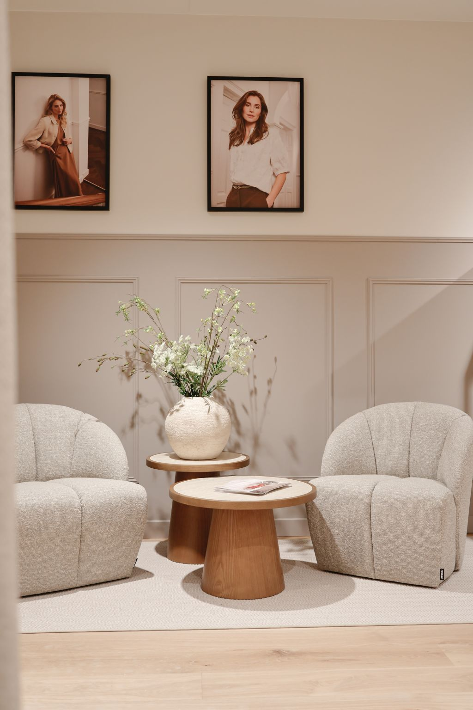
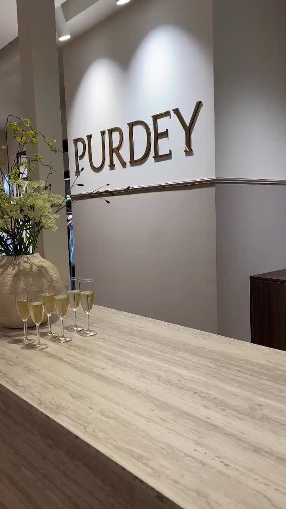
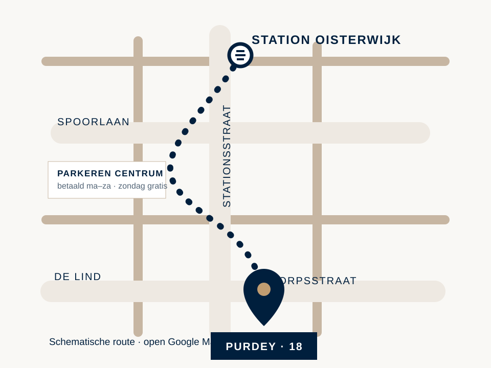

De 30e Purdey-winkel
Welkom in Oisterwijk.
Openingstijden laden…
Dorpsstraat 18
5061 HK Oisterwijk
Persoonlijk stijladvies
Even kijken. Rustig passen. Goed kiezen.
In de nieuwe winkel aan de Dorpsstraat helpen onze stylisten u graag met pasvorm, combinaties en een complete look. Loop gerust binnen; bellen vooraf kan natuurlijk ook.
Vraag het winkelteam

Open routePlan uw bezoek
Zonder zoeken aankomen.
Met de auto
Navigeer naar Dorpsstraat 18. In het centrum van Oisterwijk geldt betaald parkeren van maandag tot en met zaterdag; op zondag parkeert u gratis.
Open route in Google MapsParkeren
Op de Dorpsstraat betaalt u per kwartier. Op officiële parkeerterreinen en delen van de Spoorlaan en Vloeiweg geldt een uurtarief. In een blauwe zone kunt u maximaal twee uur gratis parkeren met parkeerschijf.
Bekijk actuele parkeerinfoMet trein of fiets
Plan uw wandel- of fietsroute vanaf station Oisterwijk rechtstreeks naar de Dorpsstraat.
Bekijk wandelrouteWanneer u welkom bent
Openingstijden
- Maandag
- 12:00–18:00
- Dinsdag
- 10:00–18:00
- Woensdag
- 10:00–18:00
- Donderdag
- 10:00–18:00
- Vrijdag
- 10:00–18:00
- Zaterdag
- 10:00–17:00
- Zondag
- Eerste zondag 12:00–17:00
Direct contact
Het winkelteam helpt u graag.
Purdey OisterwijkDorpsstraat 18
5061 HK Oisterwijk 013 203 2957 734-pu-oisterwijk@purdey.nl Kom langs in Oisterwijk